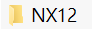
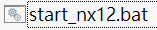
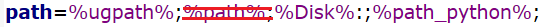

Webots <<
Previous Next >> CH1 引言
NX12
NX12 教材 資料整理
NX12配置(合併至現有可攜)
先下載NX12可攜版
解壓縮和
解壓縮到可攜系統的目錄底下
 解壓縮到可攜系統的目錄底下
解壓縮到可攜系統的目錄底下
*注意裡面的 %path%; 記得刪除，不然無法執行 python
批次檔單獨執行NX12設定(在Y槽開啟)
將裡面的程式碼改成
@echo off
set Disk=y
subst %Disk%: "data"
%Disk%:
REM for NX12
set UGII_BASE_DIR=%Disk%:\NX12
set TMP_DIR=%Disk%:\tmp
set UGII_USER_PROFILE_DIR=%Disk%:\home
set START_DIR=%TMP_DIR%
set UGII_TMP_DIR=%TMP_DIR%
set UGII_USER_DIR=%Disk%:\tmp
set UGII_GROUP_DIR=%Disk%:\tmp
set UGII_SITE_DIR=%Disk%:\tmp
set UGII_BASE_DIR_CUSTOM=%UGII_BASE_DIR%
set SPLM_LICENSE_SERVER=28000@140.130.17.37
set UGII_LANG=english
set UGII_ROOT_DIR=%UGII_BASE_DIR%\ugii
set UGS_LICENSE_BUNDLE=ACD11,ACD10
set UGII_TEMPLATE_DIR=%UGII_ROOT_DIR%\templates
set ugpath=%UGII_BASE_DIR%\nxbin;%UGII_BASE_DIR%\ugii;%UGII_BASE_DIR%\NXBIN\Radical;%UGII_BASE_DIR%\NXBIN\managed;
path=%ugpath%;
start %UGII_BASE_DIR%\ugii\ugraf.exe -nx
Exit
停止可攜同時停止NX12(修改 stop.bat)
將裡面程式碼改成
@echo off
set Disk=y
path=%PATH%;
taskkill /IM python.exe /F
taskkill /IM pythonw.exe /F
taskkill /IM node.exe /F
taskkill /IM Range.exe /F
taskkill /IM SciTE.exe /F
taskkill /IM webots.exe /F
taskkill /IM ugraf.exe /F
REM 終止虛擬硬碟與目錄的對應
subst %Disk%: /D
REM 關閉 cmd 指令視窗
taskkill /IM cmd.exe /F
EXIT
主要是通過
taskkill /IM ugraf.exe /F
來停止NX12
Webots <<
Previous Next >> CH1 引言